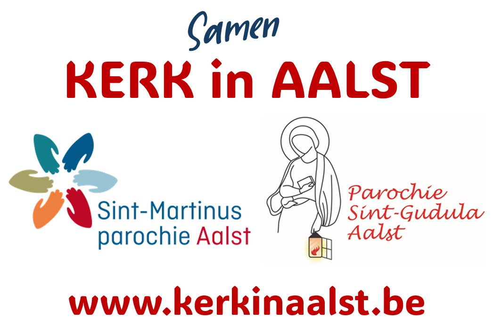

Onze catechese
Ontdek de inhoud, visie en de doelstellingen van onze catechese.
Lees meer over onze catecheseCatechese
Wij, Annelies en Ward, zijn catechisten bij Kerk in Aalst (Kerkplek Sint-Anna). Hier delen we graag alle praktische info, activiteiten, foto's en updates over onze catechese. Deze pagina is nog in opbouw, maar we kijken ernaar uit om hier samen met jullie een warme plek van te maken waar we kunnen groeien in geloof en gemeenschap.

Ontdek de inhoud, visie en de doelstellingen van onze catechese.
Lees meer over onze catecheseBekijk de planning, uurregelingen en praktische momenten van onze catechese in een duidelijk overzicht.
Bekijk praktische infoVind hier handige documenten en later ook extra foto's en misboekjes op een centrale plek.
Bekijk foto's en documenten
De Blockertjes zijn blij om deel te mogen uitmaken van de gemeenschap Kerk in Aalst.
Ontdek onze nieuwe pagina over de mini Jezusjes en bekijk een eerste voorbeeld in video.
Ga naar Mini JezusjesOntdek enkele inspirerende christelijke en katholieke kanalen die het geloof op hun eigen manier brengen.
Bekijk GodfluencersCatechesejaren
Hier kan je per catechesejaar een aparte pagina toevoegen met foto's, activiteiten, teksten, updates of een terugblik.
Een voorbeeldpagina voor een catechesejaar. Deze structuur kan later eenvoudig uitgebreid worden met extra jaren.
Bekijk catechesejaar 2024-2025Een voorbeeldpagina voor een catechesejaar. Deze structuur kan later eenvoudig uitgebreid worden met extra jaren.
Bekijk catechesejaar 2025-2026